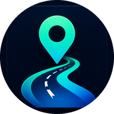

Nereden nereye olursa olsun: Türkiye'de A'dan B'ye en uygun yolu saniyeler içinde bul.
Otobüs, metro, tramvay, vapur, tren, uçak — bir rota aramasında hepsini karşılaştır.
Araban veya motosikletin için yakıt tüketimine göre gerçekçi maliyet hesabı.
Duraktaki seferin için alarm kur; 5, 10 veya 15 dakika önce bildirim al.
"Yarın 4 kişi İzmit'ten İzmir'e en ucuz nasıl gideriz?" — sor, rota ve maliyetle cevap al.
Rota adımlarını sesli dinle; yürürken telefona bakmana gerek yok.
Konumuna en yakın durakları ve yaklaşan seferleri canlı gör.
APK'yi ilk kez kurarken telefonun "bilinmeyen kaynak" uyarısı verebilir. Bu normaldir — Play Store dışındaki kurulumlarda çıkar. Adımlar:
Yaşadığın şehirde hangi otobüs, metro veya tramvay hangi saatte çalışıyor? Detaylı rehberler: